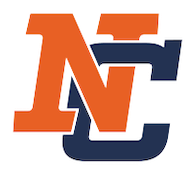
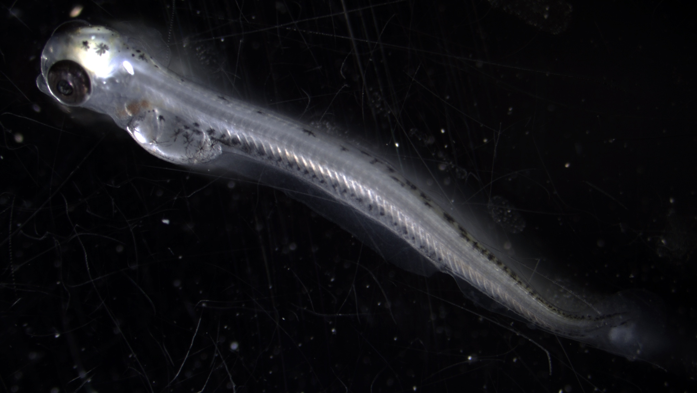

I was always fascinated by the natural world. As a child, I played outside for hours; swimming, running through the woods, climbing trees, building forts - the typical kid things. These experiences led me to pursue a B.Sc. at Northland College in Natural Resources. Northland College is a liberal arts college in northern Wisconsin with a progressive focus on the environment. Northland was the perfect place to kick-start my conservation and ecological career. With Lake Superior in my backyard, I found it effortless to develop a strong relationship to large lakes. I worked for the USGS Lake Superior Biological Station as an undergraduate technician and my passion for the Great Lakes, fisheries, and research blossomed. My time at Northland College culminated in the publication of my undergraduate thesis on Lake Superior pygmy whitefish (Prosopium coulterii) in the American Midland Naturalist.

Working Life - Where, When, and What I Learned
After graduating from Northland, I decided to work in the fisheries field to get further hands-on experience and develop and refine my research interests. For two years, I worked at the USGS Lake Erie Biological Station as part of a research team studying how food webs can be used to describe ecological change. One of my greatest takeaways from this position was the opportunity to diversify my field and lab experiences and data computation and visualization skills. I was given lots of freedom to pursue independent projects and ideas, including developing an interactive website which reports trends in the western basin ecosystem of Lake Erie using R, and writing sections of annual reports. My time at USGS fueled my passion to become a professional fisheries scientist. Graduate school was the obvious next step to achieve my goals.
Graduate School
In 2016, I began my Ph.D. at the University of Vermont (UVM). UVM was a natural decision because of its location and reputation as an environmentally conscious university. My choice of research topic was deeply personal and a lifetime in the making. I am no stranger to cold winters after living in Wisconsin for 22 years. However, not all winters were cold. In 2012, I can remember jumping into the ice-free, yet frigid, waters of Lake Superior in March - yeah, I may be a little crazy! Two years later, a Polar Vortex created record high ice coverage on Lake Superior in March. Was this variability normal or was change in the air? What effect might this variability have on fish and other aquatic organisms? These questions became a central theme of my Ph.D. program. My dissertation is focused on quantifying and modeling how climate change impacts aquatic ecosystems. Specifically, I am quantifying how changing environmental conditions, such as ice formation, influence embryo incubation, development, and subsequent survival of larval freshwater whitefishes in the Great Lakes and across the globe. I am collaborating with aquatic ecologists, evolutionary biologists, and geneticists from France, Finland, Germany, Italy, Austria, Sweden, Canada, and the USA.

Personal Life
I am an avid outdoors enthusiast always looking for the next mountain to climb, or ski up (yes, up!) depending on the season. My free time is usually spent kayaking, alpine and backcountry skiing, trail running, camping, biking, or fishing. During my less active time, you can usually find me sitting around a campfire, enjoying a craft beer, woodworking, or catching up on the latest R news.
A growing body of evidence suggests that the Earth’s climate is changing. How large-lake ecosystems respond to climate change is an area of concern because of the many ecological and socio-economic services these systems provide. Fish contribute in numerous ways to the diversity and functioning of aquatic ecosystems, and to the health, well-being, and economies across all continents. If fish become less common as a consequence of changing environmental conditions, the negative effects could be felt throughout the entire ecosystems they occupy! Understanding how aquatic organisms may adapt to climate change is crucial for management agencies to conserve and maintain diverse, abundant, and healthy populations of native species.
Integrative Approach
One way to understand whether species are vulnerable to environmental changes is to investigate how different populations of the same species have historically adapted to different climates. I am using a combination of laboratory experiments, field sampling, remote sensing, and modeling to explore how environmental variability and climate change are likely to influence recruitment bottlenecks within cold-water fish populations, such as cisco (Coregonus artedi), in the Great Lakes and around the world.
Projects: Climate Adaptability of Freshwater Whitefishes (Coregonus spp.)
1. Are Seasonal Water Temperature and Ice Concentrations Changing in the Great Lakes?
2. To what extent does photoperiod and temperature influence coregonine reproductive phenology?
3. Are evolutionary differences driving thermal resilience in early life stages across latitudes?

Lakes can act as sentinels of climate change, where changes in the surrounding area are reflected in the aquatic ecosystem. A direct impact of climate change on lakes is climate-driven variation in water temperatures and ice cover, with potential consequences for a broad range of physical and ecological impacts. Patterns in seasonal water temperature and ice cover variability in the Great Lakes are being examined to determine the magnitude of change occurring and when major regime shifts occurred. The Great Lakes provide an ideal region to study environmental change because all five of the lakes (1) experience distinct seasonality, (2) are among the largest freshwater lakes in the world, and (3) provide a gradient in lake physical properties (e.g., bathymetry, morphology, clarity). Seasonal variability in abiotic lake characteristics may have important implications on community structure and production, organismal life-history, and biotic interactions.
Climate change is implicated in shifting fish reproductive phenology. Thermal habitat changes include warmer water temperature, a longer growing season, decreased ice-cover, and more rapid spring warming. Because fish are cold-blooded, such changes in thermal habitat may affect their growth, survival, and reproduction. Coregonines are cold-water fishes that typically spawn during late-autumn or early-winter, and their eggs incubate over winter and hatch in spring. I am developing a degree-day model to evaluate latitudinal differences in, and potential impacts of, changing thermal habitat on the relationship between spawning and hatching dates. The model will be applied to three coregonines from North America and Europe across different latitudes. Phenological shifts and higher annual variability in reproduction could lead to mismatches with larval zooplankton prey and may be related to the coregonine recruitment declines observed worldwide.
Climate change may affect organisms throughout their geographical range and many studies highlight distributional shifts as a key response. However, species that reside in and are restricted to lake systems, such as coregonines, have few, if any, opportunities to migrate. Consequently, the persistence of coregonines depends on their plasticity and adaptive potential. In this context, an international scientific consortium representing 13 countries formed to evaluate the short-term adaptive response to changing thermal regimes of different coregonine species, including cisco and lake whitefish (C. clupeaformis) in North America and vendace (C. albula) and European whitefish (C. lavaretus) in Europe. We are experimentally identifying the ecological and genetic mechanisms driving latitudinal and longitudinal variation in egg and larval development, growth, and survival across a suite of congeners with similar and contrasting life history traits.
Key Collaborators
Mark Vinson, USGS Great Lakes Science Center, Lake Superior Biological Station, Ashland, WI, USA Emilien Lasne, Institut National de la Recherche Agronomique UMR ESE, Rennes, France Wes Larson, USGS Wisconsin Cooperative Fishery Research Unit, University of Wisconsin-Stevens Point, Stevens Point, WI, USA Trevor Krabbenhoft, University at Buffalo, Buffalo, NY, USA Juha Karjalainen, University of Jyväskylä, Jyväskylä, Finland Eva Enders, Fisheries and Oceans Canada, Winnipeg, MB, Canada
Sorrentino, M.G., T.R. Stewart, J.E. Marsden, and J.D. Stockwell. Differential Lipid Dynamics in Stocked and Wild Juvenile Lake Trout. J. Great Lakes Res.PDF
Kraus, R.T., C.M. Holbrook, C.S. Vandergoot, T.R. Stewart, M.D. Faust, D. Watkinson, C. Charles, M. Pegg, E. Enders, and C.C. Krueger. 2018. Evaluation of Acoustic Telemetry Grids for Determining Aquatic Animal Movement and Survival. Methods Ecol. Evol. 9(6):1489–1502. PDF
Stewart, T.R., D.H. Ogle, O.T. Gorman, and M.R. Vinson. 2016. Age, Growth, and Size of Lake Superior Pygmy Whitefish (Prosopium coulterii). Am. Midl. Nat. 175(1):24–36. PDF
In Review/Revision
Lucke, V.S., T.R. Stewart, M.R. Vinson, J.D. Glase, and J.D. Stockwell. Spring larval Coregonus diets and zooplankton community patterns in the Apostle Islands, Lake Superior. J. Great Lakes Res.
Technical Reports
LEBS. 2016. Fisheries Research and Monitoring Activities of the Lake Erie Biological Station, 2015. Prepared by B. Bodamer-Scarbro, W.H. Edwards, P.M. Kočovský, R.T. Kraus, M.W. Rogers, A.L. Schoonyan, and T.R. Stewart. Report of the Lake Erie Biological Station (LEBS) to the Great Lakes Fishery Commission at the Annual Meeting of Lake Committees, Ypsilanti, Michigan. LEBS. 2015. Fisheries Research and Monitoring Activities of the Lake Erie Biological Station, 2014. Prepared by B. Bodamer-Scarbro, W.H. Edwards, C. Gawne, P.M. Kočovský, R.T. Kraus, M.W. Rogers, and T.R. Stewart. Report of the Lake Erie Biological Station (LEBS) to the Great Lakes Fishery Commission at the Annual Meeting of Lake Committees, Ypsilanti, Michigan.
In Preperation
Lachance, H.M., T.R. Stewart, M.H. Pespeni, T.J. Krabbenhoft, and J.D. Stockwell. Shedding light on an Understudied Environmental Factor: How Does Light Impact Cisco (Coregonus artedi) Embryos and Larvae? J. Great Lakes Res. Stewart, T.R., M.R. Vinson, and J.D. Stockwell. Season of change: regime shifts in Great Lakes ice cover and water temperature.
Taylor R. Stewart Ph.D. Candidate University of Vermont Department of Biology Rubenstein Ecosystem Science Laboratory 3 College St, Burlington, VT 05401 Email: taylor.stewart@uvm.edu 920.268.5459
Education
Doctor of Philosophy: University of Vermont, Burlington, VT Department of Biology Advisor: Dr. Jason D. Stockwell Committee: Drs. J. Ellen Marsden, Nicholas J. Gotelli, Richard M. Single, & Sture Hansson Dissertation Title: Changing Thermal Regimes and the Response and Potential Adaptability of Coregonines Expected: 03/2021
Bachelor of Science: Northland College, Ashland, WI – 05/2014 Major: Natural Resources – Emphasis in
Fisheries and Wildlife Ecology Graduating Honors: Natural Resources Department Merit Senior Thesis: Age and Growth of Pygmy Whitefish, Prosopium coulterii, in Lake Superior
Professional Experience
University of VermontBurlington, VT Graduate Research Assistant05/2016 - Present
USGS Lake Erie Biological StationSandusky, OH Fisheries Research Technician05/2014 – 05/2016
USGS Lake Superior Biological StationAshland, WI Fisheries Research Technician01/2012 – 05/2016
Publications
In Press Sorrentino, M.G., T.R. Stewart, J.E. Marsden, and J.D. Stockwell. Differential Lipid Dynamics in Stocked and Wild Juvenile Lake Trout. J. Great Lakes Res. Preprint: https://doi.org/10.1101/718692
In Review Lucke, V.S., T.R. Stewart, M.R. Vinson, J.D. Glase, and J.D. Stockwell. Spring larval Coregonus diets and zooplankton community patterns in the Apostle Islands, Lake Superior. J. Great Lakes Res.
2018 Kraus, R.T., C.M. Holbrook, C.S. Vandergoot, T.R. Stewart, M.D. Faust, D. Watkinson, C. Charles, M. Pegg, E. Enders, and C.C. Krueger. 2018. Evaluation of Acoustic Telemetry Grids for Determining Aquatic Animal Movement and Survival. Methods Ecol. Evol. 9(6):1489–1502. PDF
2016 Stewart, T.R., D.H. Ogle, O.T. Gorman, and M.R. Vinson. 2016. Age, Growth, and Size of Lake Superior Pygmy Whitefish (Prosopium coulterii). Am. Midl. Nat. 175(1):24–36. PDF
Technical Reports LEBS. 2016. Fisheries Research and Monitoring Activities of the Lake Erie Biological Station, 2015. Prepared by B. Bodamer-Scarbro, W.H. Edwards, P.M. Kočovský, R.T. Kraus, M.W. Rogers, A.L. Schoonyan, and T.R. Stewart. Report of the Lake Erie Biological Station (LEBS) to the Great Lakes Fishery Commission at the Annual Meeting of Lake Committees, Ypsilanti, Michigan. LEBS. 2015. Fisheries Research and Monitoring Activities of the Lake Erie Biological Station, 2014. Prepared by B. Bodamer-Scarbro, W.H. Edwards, C. Gawne, P.M. Kočovský, R.T. Kraus, M.W. Rogers, and T.R. Stewart. Report of the Lake Erie Biological Station (LEBS) to the Great Lakes Fishery Commission at the Annual Meeting of Lake Committees, Ypsilanti, Michigan.
In Preperation Lachance, H.M., T.R. Stewart, M.H. Pespeni, T.J. Krabbenhoft, and J.D. Stockwell. Shedding light on an Understudied Environmental Factor: How Does Light Impact Cisco (Coregonus artedi) Embryos and Larvae? Stewart, T.R., M.R. Vinson, and J.D. Stockwell. Season of change: regime shifts in Great Lakes ice cover and water temperature.
Funded Grants
2020 – Vinson, M.R., T.R. Stewart, and J.D. Stockwell. Quantifying a potential mechanism between ice cover and cisco recruitment success: what role does light play in cisco embryonic development and larval survival? Great Lakes Restoration Initiative: $30,250 2019 – Stewart, T.R. and J.D. Stockwell. Influence of changing lake temperatures on early life stages of freshwater whitefishes at local to global scales: modeling and experimental approaches. Vermont Water Resources and Lake Studies Center: $41,737 2018 – Stockwell, J.D. and T.R. Stewart. Workshop to Establish a Collaborative Global Experiment to Understand Coregonid Adaptive Response to Changing Thermal Regimes. National Science Foundation: $14,865 2017 – Vinson, M.R., T.R. Stewart, and J.D. Stockwell. Lake Superior Larval Cisco Population Dynamics. Great Lakes Restoration Initiative: $125,000 2016 – Vinson, M.R., T.R. Stewart, and J.D. Stockwell. Lake Superior Coregonus artedi Egg Development and Larvae Survival Dynamics. Great Lakes Restoration Initiative: $225,000
Professional Presentations
Oral Conference Presentations: Stewart, T.R., M. Makenen, Brun, C., C. Goulon, J. Guillard, E. Lasne, J. Karjalainen, and J.D. Stockwell. Influence of changing lake temperatures on coregonine embryogenesis at local to global scales. 14th International Coregonid Symposium, Finland. June 2020.
Brun, C., M. Makenen, C. Goulon, J. Guillard, M. Daufresne, T.R. Stewart, J. Karjalainen, and E. Lasne. Experimental evidence of strong divergences of European whitefish Coregonus lavaretus (L.) embryos’ response to temperature increase in fennoscandian and perialpine populations. 14th International Coregonid Symposium, Finland. June 2020. Stewart, T.R., M. Zucchetta, J. Karjalainen, C. Goulon, O. Anneville, M.R. Vinson, J. Wanzenböck, I.J. Winfield, and J.D. Stockwell. A Modeling Approach to Better Understand Impacts of Changing Thermal Habitat on Coregonine Spawning and Egg Incubation Across Latitudes and Continents. ELLS-IAGLR, Evian-les-Bains, France. September 2018. Stewart, T.R., E. Lasne, C. Goulon, J. Guillard, M.R. Vinson, J. Wanzenböck, I.J. Winfield, and J.D. Stockwell. Coregonines in the Face of Climate Change: A Collaborative Global Experiment. 148th Annual Meeting of the American Fisheries Society, Atlantic City, NJ. August 2018. Stewart, T.R., M.R. Vinson, and J.D. Stockwell. Effect of Photoperiod Intensity on Cisco (Coregonus artedi) Egg Development. 13th International Coregonid Symposium, Bayfield, WI. September 2017. Stewart, T.R., D.H. Ogle, O.T. Gorman, and M.R. Vinson. Age, Growth, and Size of Lake Superior Pygmy Whitefish. American Fisheries Society National Meeting, Portland, OR. August 2015.
Poster Conference Presentations: Stewart, T.R., M.R. Vinson, and J.D. Stockwell. Effect of Photoperiod Intensity on Cisco (Coregonus artedi) Egg Development. University of Vermont Student Research Conference, Burlington, VT. April 2019. Stewart, T.R., A.M. Muir, M.R. Vinson, K.R. Newman, and J.D. Stockwell. Opportunities and Constraints for Coregonid Response to a Changing Environment: A Global Assessment. 13th International Coregonid Symposium, Bayfield, WI. September 2017. Stewart, T.R., M.R. Vinson, and J.D. Stockwell. Effect of Photoperiod Intensity on Cisco (Coregonus artedi) Egg Development. 60th Annual International Association of Great Lakes Research Meeting, Detroit, MI. May 2017. Stewart, T.R., D.H. Ogle, and M.R. Vinson. Age and Growth of Pygmy Whitefish, Prosopium coulterii, in Lake Superior. Wisconsin Chapter of the American Fisheries Society Annual Meeting, Green Bay, WI. February 2013.
Invited Speaker: 04/2017 – USGS Great Lakes Science Center Seminar Title: “Physiological consequences of changes in photoperiod intensity on cisco (Coregonus artedi) recruitment” 03/2015 – Lake Erie Committee Meeting Seminar Title: “Online Data Reporting & Visualization Tools” 02/2015 – Lake Erie Committee, Forage Task Group Meeting Seminar Title: “Status and Trends of Forage Fish in Western Basin of Lake Erie”
Teaching Experience: 2020 – Graduate Teaching Assistant, University of Vermont, Biology 002, Principles of Biology 2019 – Graduate Teaching Assistant, University of Vermont, Plant Biology 095, Plants on the Move 2019 – Graduate Teaching Assistant, University of Vermont, Biology Core 102, Ecology and Evolution 2016 – Graduate Teaching Assistant, University of Vermont, Biology 001, Principles of Biology 2015 – Co-Instructor, American Fisheries Society National Meeting, Continuing Education Workshop “Age and Growth Analyses with R” 2014 – Teaching Assistant, Northland College, Natural Resources 349, Fisheries Science & Management 2013 – Teaching Assistant, Northland College, Natural Resources 225, Fisheries & Wildlife Techniques
Mentoring
Undergraduate Researchers: Maddi Sorrentino worked on differential lipid dynamics in stocked and wild juvenile lake trout in Lake Champlain. This work was part of her Honor's Thesis and led to a manuscript currently in review at the Journal of Great Lake Research. Victoria Giacchino worked on animal husbandry during laboratory experiments and processed zooplankton samples from lakes around the world.
External Reviewer
Journal of Great Lakes Research (3) North American Journal of Fisheries Management (2)
Computational Skills
R – Statistical software for data analysis and visualization (R)Markdown – Integrative word processing and technical reporting Shiny – Interactive web-based apps for data reporting & visualization GitHub – Reproducible science through version control and online notebooks ArcGIS – Spatial analysis software for mapping & visualization VUE - VEMCO acoustic monitoring software SQL – Database management SAS – Statistical software for data analysis and visualization Microsoft Office – Data preparation, organization, and word processing HTML – Website development
Professional Training & Workshops
06/2016 – "Vermont Boating License" Vermont State Police 10/2015 – "American Red Cross Lifeguarding Certification” Kalahari Waterparks, Resorts & Conventions 07/2015 – “Early Development of Four Cyprinids Native to the Yangtze River, China” Amy E. George, USGS - Columbia Environmental Research Center 07/2015 – "Department of Interior Motorboat Operator Certification Course” Gary L. Rutz, USGS - Lake Erie Biological Station 03/2014 – "American Red Cross Adult First Aid/CPR/AED with Anaphylaxis Shock” Autumn J. Kelley, Northland College 03/2013 – "Wilderness Search & Rescue Certification” Northland College 05/2012 – "PADI Open Water Scuba Certification” Northland College
Affiliations & Awards
Professional Affiliations: American Fisheries Society International Association of Great Lakes Research
Awards: 09/2017 - 13th International Coregonid Symposium Student Travel Award 05/2014 - Northland College’s Natural Resources Department Merit Award 04/2014 - Northland College’s Matthew Berg Endowed Award